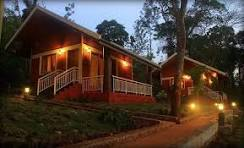

Hotel "Malnad Coffee House" is a cozy local hotel in Chikkamagaluru, Karnataka, owned by Preetham H B. The hotel offers fresh and delicious South Indian food, evening snacks, and freshly brewed filter coffee. It is a simple and comfortable place for students, families, travellers, and local people to enjoy good food at affordable prices. With friendly service and a warm atmosphere, Hotel Malnad Coffee House aims to give every customer a homely experience.

Welcome to Hotel Malnad Coffee House, a place where great food meets great taste. Located in the beautiful city of Chikkamagaluru, we serve fresh and delicious South Indian food. Enjoy crispy dosas, soft idlis, tasty meals, and our special filter coffee. Every dish is prepared with fresh ingredients and care. Our warm atmosphere makes you feel right at home. We welcome students, families, travellers, and coffee lovers. Our goal is to provide quality food at affordable prices. Come and enjoy the authentic taste of Chikkamagaluru with us! Hotel Malnad Coffee House — Taste that brings you back.

☕ Hotel Malnad Coffee House Hotel Malnad Coffee House is a friendly and welcoming hotel located in Chikkamagaluru, Karnataka. The hotel was started by Preetham H B with a passion for good food and great coffee. Our goal is to provide delicious food at affordable prices. We serve a variety of traditional South Indian dishes. Our menu includes idli, vada, dosa, poori, meals and tasty evening snacks. Our special filter coffee is one of the favourites among our customers. We prepare our food using fresh and quality ingredients. Our chefs carefully prepare every dish to maintain its authentic taste. We believe that fresh food always creates a better experience. The hotel has a simple, clean and comfortable atmosphere. Customers can enjoy their meals in a peaceful environment. We welcome students, families, travellers and local residents. Our friendly staff always tries to provide quick and polite service. Customer satisfaction is one of our main priorities. We want every visitor to feel comfortable when they enter our hotel. Our hotel is inspired by the beautiful coffee culture of Chikkamagaluru. The aroma of freshly brewed coffee gives our hotel a special identity. We believe that coffee is not just a drink but a reason for people to come together. Friends can meet here and enjoy conversations over a cup of coffee. Families can spend quality time together while enjoying delicious food. Travellers can stop by and enjoy a quick and satisfying meal. Our breakfast is prepared fresh every morning. Our lunch menu offers tasty and filling South Indian meals. In the evening, customers can enjoy snacks with hot tea or coffee. We try to keep our prices reasonable so everyone can enjoy our food. Cleanliness and quality are important parts of our service. Our team works together to make every visit special. We always listen to our customers and value their feedback. Their support motivates us to improve every day. We continue to introduce new dishes while maintaining traditional flavours. Our dream is to become a favourite local food spot in Chikkamagaluru. We want our customers to remember us for our taste and hospitality. Every customer who visits our hotel becomes part of our journey. We are thankful for the love and support we receive from our community. Our journey started with a simple idea and a strong passion for food. Today, that idea continues to grow with every happy customer. We look forward to welcoming you and serving you with a smile. Come and enjoy delicious food, refreshing coffee and a warm atmosphere. Hotel Malnad Coffee House — Taste that brings you back.